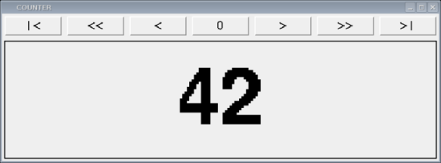
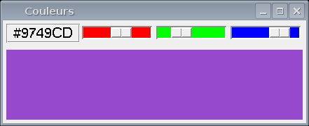
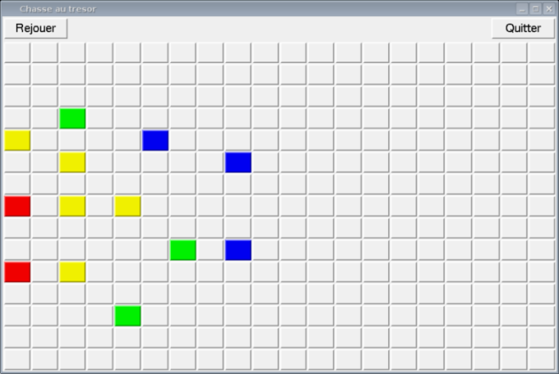

|
Attention: Ce cours aura lieu le 30 mars et non le 23 mars.
Les transparents du sixième cours sont disponibles ici.
La version longue des transparents est ici.
Voir le chapitre 8 du livre Apprendre à programmer avec Python.
Les documents de référence les plus intéressants sont en anglais. Ainsi le manuel de Fredrik Lundh, An Introduction to Tkinter et celui de John Shipman, Tkinter Reference détaillent l'ensemble des paramètres de configuration des objets graphiques de la bibliothèque.
Les exercices proposés ci-dessous sont empruntés à Christophe Schlick.
Exercice 1 - Compteur
Érire un programme counter qui affiche une fenêtre graphique permettant à l'utilisateur de contrôler un compteur numérique dans un intervalle [-1000, 1000] par une série de sept boutons de commande.
Les trois boutons "|<", "0" et ">|" permettent d'aller directement à la valeur minimale, la valeur nulle ou la valeur maximale du compteur. Les quatre boutons "<<", "<", ">" et ">>" permettent de modifier la valeur courante du compteur par pas de -10, -1, 1 et 10. À tout moment, il faut vérifier que la valeur du compteur se trouve bien dans l'intervalle autorisé. Le résultat graphique souhaité est représenté dans l'image ci-dessous (widgets utilisées : Frame, Label, Button) :

Exercice 2 - Couleurs
Écrire un programme qui affiche une fenêtre graphique permettant à l'utilisateur de créer interactivement une couleur dans le mode RGB (Red, Green, Blue).
Pour cela, le programme doit fournir trois potentiomètres (Widget Scale) permettant de saisir une valeur entre 0 et 255, contrôlant respectivement les intensités de rouge, de vert et de bleu. Les valeurs de ces trois potentiomètres sont alors converties en hexadécimal pour créer une chaîne de caractères de la forme "#RRGGBB" correspondant à la représentation standard des couleurs de Tkinter.
Cette couleur est ensuite utilisée comme couleur de fond de la partie inférieure de la fenêtre, ce qui permet à l'utilisateur de visualiser le résultat de ses manipulations. Le résultat graphique souhaité est représenté dans l'image ci-dessous (widgets utilisées :Frame, Label, Button, Scale) :

Exercice 3 - Chasse au trésor
Écrire un programme qui affiche une fenêtre graphique permettant à l'utilisateur de jouer au jeu classique de la chasse au trésor.
Le programme sélectionne aléatoirement l'une des cases d'un tableau 15x15 qui représentera l'emplacement du trésor (la taille du tableau doit être un paramètre de configuration modifiable dans le code source). À chaque tour, l'utilisateur clique sur une case et le programme y affiche un code de couleur relatif à la distance entre cette case et la case au trésor (rouge pour une distance < 3, jaune pour une distance < 6, vert pour une distance < 9, bleu pour une distance < 12, et gris pour toutes les distances au-delà). Attention, il ne s'agit pas d'une distance euclidienne, mais d'une distance dite de Manhattan, correspondant au nombre de déplacements horizontaux ou verticaux nécessaires pour rejoindre la case au trésor.
Le but du jeu est évidemment de trouver le tésor en un minimum de tours. Le résultat graphique souhaité est représenté dans l'image ci-dessous (widgets utilisées :Frame, Button) :

|